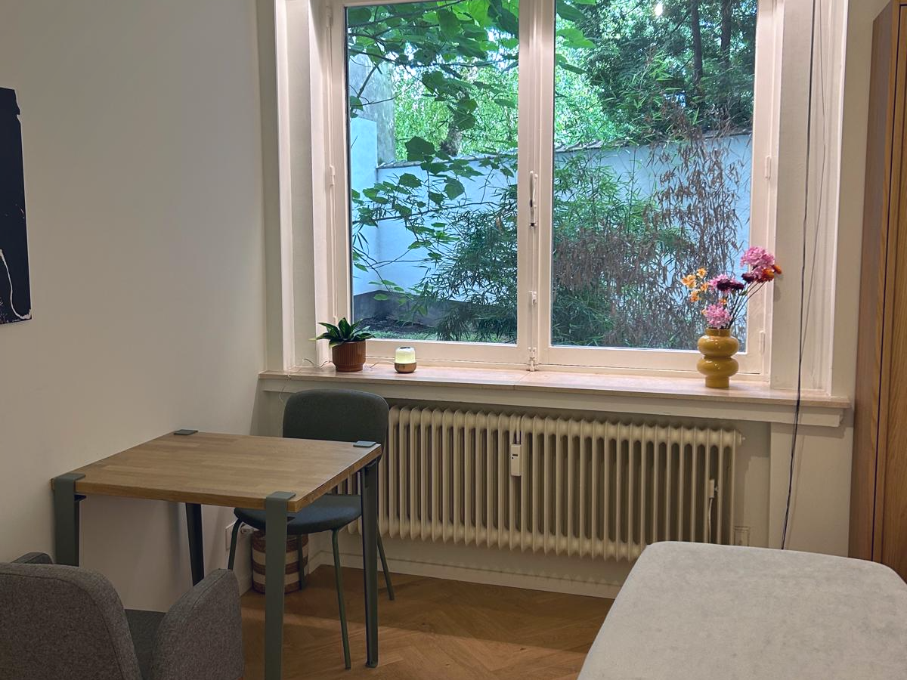

J'accompagne celles et ceux qui ne se reconnaissent plus tout à fait dans leur quotidien — dans leurs transitions de vie, personnelles comme professionnelles. À Uccle et en visio.
Consultations en français & néerlandais.
Le monde accélère, les injonctions se multiplient, et il devient de plus en plus difficile de savoir ce qui compte vraiment pour vous. Je ne vous apporte pas les réponses toutes faites : je vous aide à retrouver votre propre boussole — ce qui vous donne de l'énergie, du sens, de l'élan.
Comprendre votre situation, déposer ce qui pèse, nommer ce qui vous amène — en toute confidentialité.
Questionner vos moteurs, vous reconnecter à vos envies — retrouver ce qui vous donne envie de vous lever le matin.
Explorer de nouveaux possibles et faire le premier pas, celui de décider. Vers une vie qui vous ressemble.
Une reconversion qui mûrit, un rôle dans lequel on ne se retrouve plus, un quotidien qui a accéléré sans vous demander votre avis. Le chaos extérieur masque parfois ce qui compte vraiment à l'intérieur. Peu importe que ce soit privé ou professionnel : la personne prime toujours.
Retrouver ses moteurs — ce qui vous donne de l'énergie, du sens, de l'élan — c'est souvent le premier pas pour reprendre la main. Le reste se construit ensemble, pas à pas.
Tout commence par un premier entretien. Ensuite, on avance à l'unité ou en cheminement accompagné — selon ce dont vous avez besoin.
Une analyse de vos besoins (1h) : vous exposez votre situation, ensemble on clarifie ce que vous cherchez et comment avancer. Cette séance est payante — elle est offerte si un accompagnement suit dans la foulée.
À partir de 3 séances, en fonction de vos besoins et de votre rythme. Chaque séance va jusqu'à 1h30. On avance à un rythme soutenable, pour atteindre vos objectifs.
Des personnes qui ont fait le chemin. À leur rythme, vers une vie qui leur ressemble.
Grâce à l’écoute active et à l’esprit analytique, j’ai pu identifier ce qui me freinait et trouver le courage de me remettre en mouvement. Un accompagnement bienveillant et concret.
Une qualité de présence rare qui m’a permis de prendre conscience de ce dont j’avais vraiment besoin — et de poser les premiers pas vers un chemin qui me ressemble.
Une écoute fine, un esprit terre à terre, et surtout la capacité à me challenger là où je me racontais des histoires. Ça m’a aidée à voir les choses autrement et à avancer.

Cinq années d'études universitaires, sept ans à avancer vite — avant de choisir d'avancer juste, des voyages professionnels aux quatre coins du monde quand j'étais jeune — j'ai longtemps coché les bonnes cases — sans me demander si c'était les miennes.
Jusqu'au jour où j'ai osé poser la seule question qui comptait : qu'est-ce qui m'anime, moi ? Maman de deux enfants, j'ai compris que cette question ne concerne pas que le travail — elle touche à qui on est, dans tous nos rôles. C'est de là qu'est née l'envie d'accompagner les autres au moment où ils et elles posent, eux aussi, cette même question.
Aujourd'hui, je mets cette expérience au service d'un accompagnement ancré dans le réel : un espace d'écoute pour traverser vos transitions, vous reconnecter à vos moteurs, et avancer vers une vie qui vous ressemble. Ma formation de coach — deux ans au sein de la BAO Academy — m'a donné les outils pour vous accompagner avec justesse et présence.
Une question, l'envie de commencer ? Écrivez-moi un mot — je vous réponds personnellement.